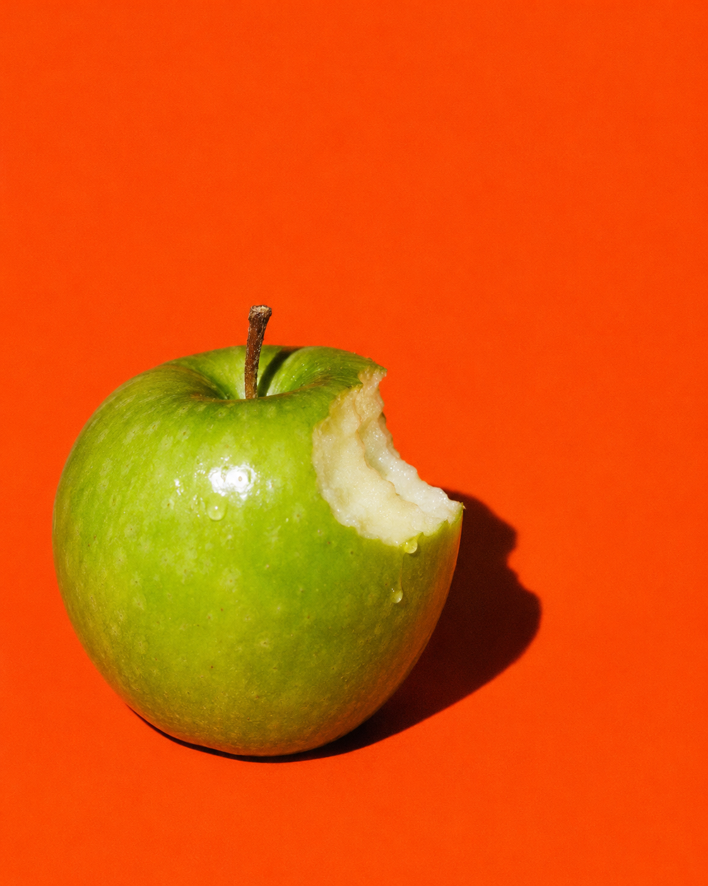

This page answers the technique questions (which mask, which fallback, what it costs). The behaviour in brand/03-interaction-spec.md (a bite that cuts in one frame on click, squash and recoil, crumbs, one-shot portions, chew and open wide) is built in interaction.html; sections B, C and E here follow the earlier brief instead.
The shapes on this page are the provisional ones it was built with (--proto-* in assets/css/bite.css), except row A2b, which shows the bite the visual system settled on. Geometry comes from tools/bite.mjs. Rows marked "comparison" embed a frozen copy of that geometry; everything else reads assets/css/bite.css and updates when the tool is re-run. Query flags: ?eat=io forces the observer fallback in section C, ?eat=scrub scrubs instead of snapping, ?font=archivo|saira switches the test face in section E and ?vf=poster swaps in a larger four-line headline.
Same bite, four techniques, three box shapes (4:5 photo, 16:9, small square). Bite size is 30% of the box width in every case.
A2. mask: one oversized SVG tile (recommended)

A2b. the same technique with the bite from brand/02-visual-system.md (three equal arcs, tile 25% of the width). The swap was one line in tools/bite.mjs
A1. mask: radial gradients, intersected (comparison)
A3. clip-path: shape() (comparison)
A4. SVG clipPath, objectBoundingBox, one path per aspect ratio (comparison)
A4b. the same clipPath reused on the wrong aspect ratio (what goes wrong)
Parameters of the recommended technique: corner, size, scallop count (bite = 4 marks, nibble = 3)
Edge cases for the recommended technique: rotated, rounded (with clip-path, not border-radius), half-pixel offset, and a wide band with a small bite
Press and hold with a pointer, or focus and press Enter or Space. The label never moves and the whole pill stays clickable.
Held in the bitten state (for screenshots)
A price tag with one nibble. Linked chips swap colour and tilt on hover; pressing takes a bigger bite.
Width and weight animate; the orange box never changes size. First headline: one-shot entrance. Second: axes tied to scroll (a new layout and repaint on every frame). Third: the same range faked with a transform, as a cost baseline.
E1. entrance, one shot
E2. axes follow scroll (per-frame)
E3. control: transform only
One bite per step as each step crosses the middle of the screen; scroll back and it is whole again.